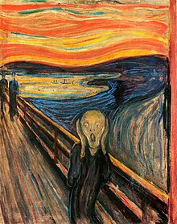

მუნკი აღიზარდა ნორვეგიის დედაქალაქ ოსლოში. მამამისი, ქრისტიან მუნკი - ისტორიკოს პეტერ ანდრეას მუნკის ძმა - იყო
ღრმად მორწმუნე სამხედრო ექიმი მოკრძალებული შემოსავლით. 44 წლის ასაკში იქორწინა ვაჭრის ქალიშვილზე, რომელიც მასზე 20
წლით უმცროსი იყო და რომელიც 33 წლის ასაკში ტუბერკულოზით გარდაიცვალა. ედვარდი ამ დროს 5 წლის იყო. თავად ედვარდსაც სუსტი
ჯანმრთელობა ჰქონდა. მისი უფროსი და სოფიაც ტუბერკულოზის მსხვერპლი გახდა. ედვარდის უმცროსი და ლაურა კი „მელანქოლიის“ (დღეს
დეპრესიის) გამო მკურნალობდა. 5 და-ძმისგან მხოლოდ ედვარდის ძმამ ანდრეასმა იქორწინა.
იგი ქორწინებიდან რამდენიმე თვეში გარდაიცვალა.
შემოქმედება

მუნკის ყველაზე ცნობილი ნამუშევარია „კივილი“, უფრო ზუსტად, ესაა მსგავსი ნახატების სერია.
თავდაპირველად ტილოს „სასოწარკვეთილება“ ერქვა. ამ სურათზე გამოსახული საშინელების სახე, რომელსაც მუნკი მ
თელი ცხოვრება
ჰქმნიდა, დღესდღეობით კონცეპტუალური ხელოვნების სიმბოლოა.